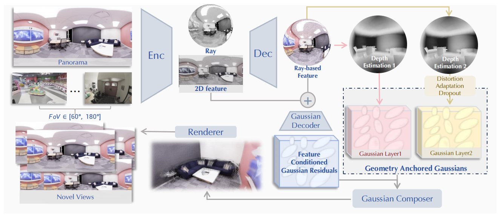
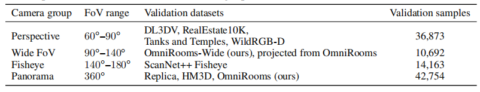

Panoramic Performance
Dynamic Comparison
Panoramic Camera
Perspective Camera
UniSHARP vs. SHARP — Orbit Panorama
UniSHARP vs. SHARP on orbit panoramas.
For SHARP, we run inference on each of the six cubemap faces separately and stitch the outputs into one equirectangular panorama; visible stitching seams remain.
Qualitative Evaluation
Comparison On Perspective Camera
Comparison On Panoramic Camera
Comparison On Fisheye Camera
In this work, we focus on extending SHARP, the popular photorealistic view synthesis method, for universal monocular rendering across diverse camera systems, such as large-field-of-view fisheye lenses. To overcome the pinhole-specific assumptions of SHARP, our key idea is to align various images in a unified omnidirectional latent space. Thus, we propose UniSHARP, which performs implicit alignment in both feature and Gaussian spaces. Specifically, 2D semantic embeddings and 3D spatial features are jointly encoded and decoded by UniK3D to support Gaussian construction, while a ray-based universal representation organizes Gaussian primitives along rays and radial distances. To comprehensively evaluate our method, we construct a benchmark covering diverse imaging systems, including pinhole, fisheye and panoramic cameras, across various scenes. The benchmark is further stratified by field of view, spanning narrow perspective, wide-FoV, fisheye, and full panoramic settings. Extensive experiments on the proposed benchmark demonstrate the effectiveness of UniSHARP, outperforming alternative methods by a large margin.
Methodology

UniSHARP pipeline for universal-camera monocular novel view synthesis.
Given a single source image, UniSHARP estimates ray-distance geometry and multi-scale features, initializes two-layer Gaussians in ray-distance space, predicts Feature Conditioned Gaussian residuals, and renders target views with the unified Gaussian representation across perspective, wide-FoV, fisheye, and panoramic cameras.
Benchmark

Composition of the proposed field-of-view stratified benchmark for universal-camera monocular novel view synthesis. Validation pairs are grouped by effective FoV and projection type, and sample counts denote evaluated source-target pairs.
OmniRooms
Details
Citation
@article{song2026unisharp,
title={UniSHARP: Universal Sharp Monocular View Synthesis},
author={Song, Meixi and Zhang, Dizhe and Ren, Hao and Zhang, Ruiyang and Du, Bo and Yang, Ming-Hsuan and Qi, Lu},
journal={arXiv},
year={2026}
}